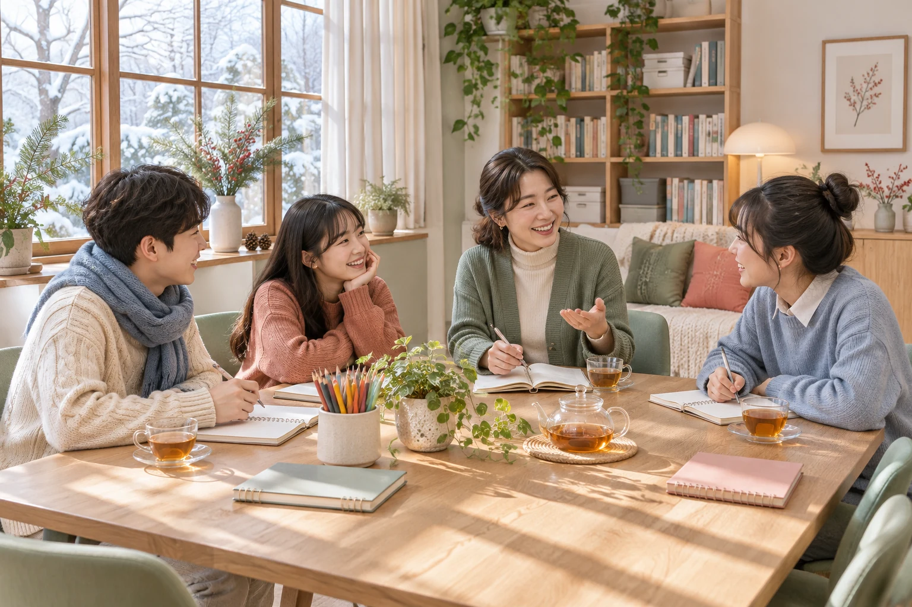
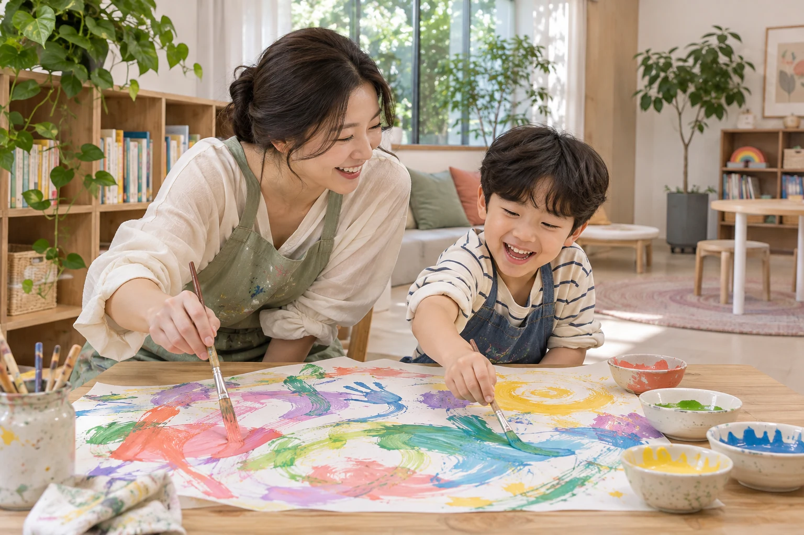
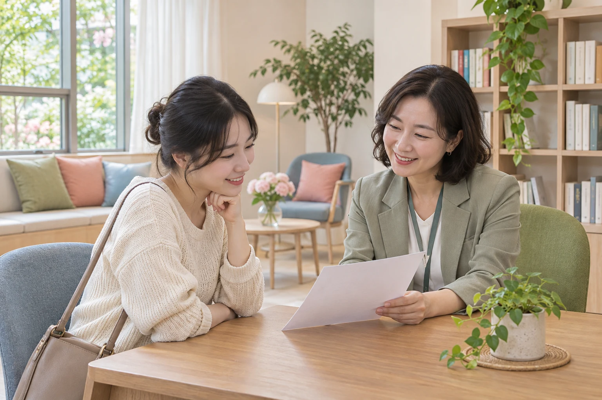

GROW TOGETHER
함께 배우고,
함께 자라는 연결.
겨울 모임과 새로운 배움의 이야기를 만나보세요.
MEMBERSHIP
서로의 일상을 넓히는
모먼트리 회원 모임
책 한 권, 작은 작품, 새로운 이야기를 매개로 함께 배우고 연결되는 시간을 제안합니다.
- 매달 만나는 독서·대화 모임
- 분기마다 함께하는 창작 체험
- 나의 관심을 나누는 배움의 연결
일반회원 안내
- 참여 대상
- 배움과 모임에 관심 있는 만 19세 이상
- 정기 활동
- 월 1회 독서·대화 모임 · 분기 1회 창작 모임
- 회원 혜택
- 모임 소식 안내 · 교육·체험 우선 신청 안내
- 연회비 안내
- 30,000원 / 년
- 12월 모임
- 2026.12.19(토) 15:30–17:00 · 배움실
- 신청 방식
- 상담·프로그램 신청서에서 회원 참여 선택
배움의 관심을 나누며 정기적인 모임과 창작 활동을 함께합니다.
NEWS & ACTIVITIES
모먼트리 소식
새로운 프로그램과 모먼트리의 소식을 전합니다.
6개의 소식

12월 상담·교육·체험 프로그램 안내
마음을 돌보고, 새로운 배움을 만나는 겨울 프로그램을 소개합니다.

함께 자라는 겨울 회원 모임
한 달에 한 번, 일상과 배움을 나누는 회원 모임에 초대합니다.

처음 만나는 다중지능 워크숍
좋아하는 활동을 살펴보며 아이의 다양한 관심과 표현을 만납니다.

손끝으로 나누는 겨울 비즈공예
나의 색을 골라 만드는 작은 장신구, 손끝의 취향을 만나보세요.

엄마와 함께하는 겨울 미술놀이
완성된 작품보다 함께 탐색하는 즐거움에 집중하는 놀이 시간입니다.

상담 이용과 예약 변경 안내
첫 방문부터 일정 변경까지, 이용 과정을 한눈에 살펴보세요.